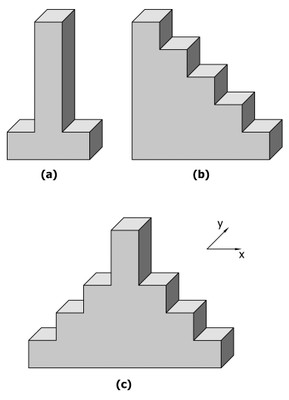
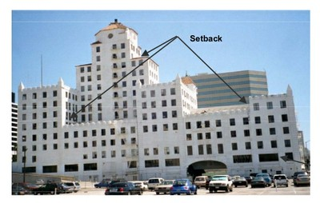
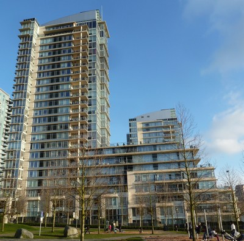

Setback [SET]
Abrupt change in elevational profile, such as in a building with tower and podium that creates a notch effect. A setback exists if the horizontal dimension of the seismic force-resisting system in any story is more than 130% of that in an adjacent story. Note that the Setback irregularity is a special albeit common case of Change in Vertical Structure, and therefore it has its own definition.

Simplified examples of typical building shapes that have setbacks (A. Charleson, Seismic Design for Architects, Architectural Press 2008, p154 fig. 9.21).

An example of a building with several setbacks (FEMA 154, 2002)

A building with a setback, Vancouver, Canada (S. Brzev)

A building with a setback, Fort Lauderdale, Florida, USA (S. Brzev)